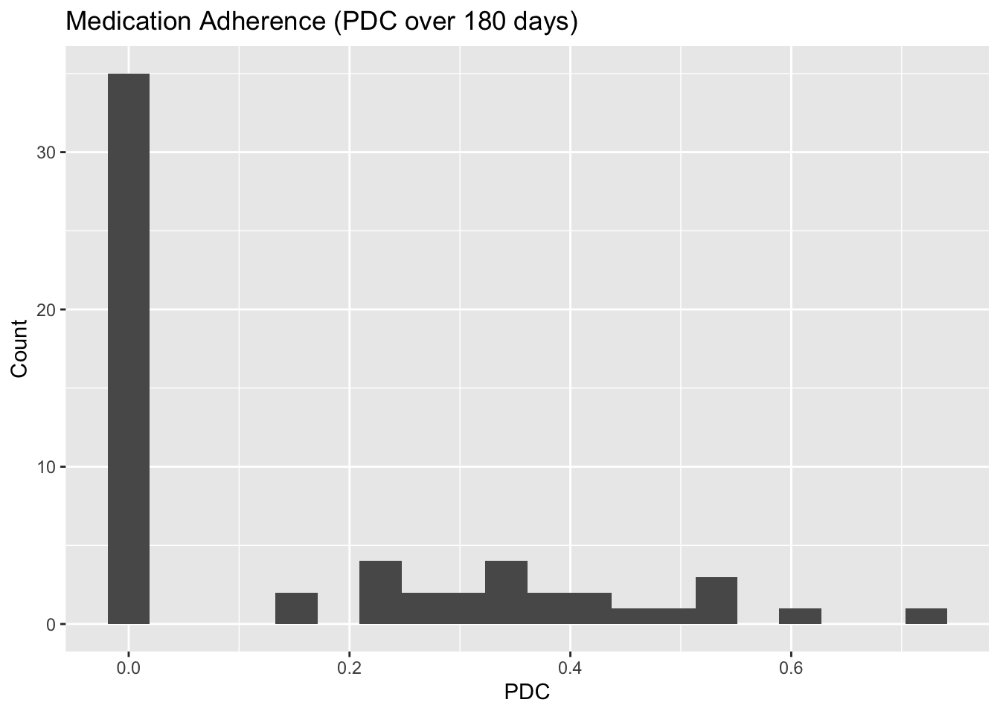

# read.csv in base R
# df_base <- read.csv("data/example.csv", stringsAsFactors = FALSE)R/RStudio Tutorial + HEOR Template — University of Washington Style (Fixed)
About this document
Part 1 is a hands-on tutorial introducing R and RStudio (installation, interface, data import, packages, objects, analysis, saving work).
Part 2 applies the workflow to a HEOR (Health Economics & Outcomes Research) example with a synthetic claims/EHR dataset.
Styled with University of Washington purple/gold accents.
1 Part 1 — R & RStudio Tutorial
1.1 Installing R and RStudio
- Download R from CRAN (Comprehensive R Archive Network): https://cran.r-project.org
- Download RStudio Desktop (free): https://posit.co/download/rstudio-desktop/
Order matters: install R first, then RStudio. Open RStudio; it will find R automatically.
1.2 Base R vs. RStudio (IDE)
- Base R is the language/interpreter (you can run R at the command line or in the basic R GUI).
- RStudio is an IDE that wraps R with an editor, console, plots, package tools, and integrated help.
Analogy: R is the engine; RStudio is the dashboard.
1.3 The RStudio Interface: The Four Panes
- Source/Editor (top-left) — write scripts (
.R), R Markdown (.Rmd), and Quarto (.qmd). UseCtrl/Cmd + Enterto run.
- Console (bottom-left) — executes code and shows output/errors.
- Environment/History (top-right) — lists objects in memory and your command history.
- Files/Plots/Packages/Help/Viewer (bottom-right) — manage files, view plots, install/load packages, read help (
?function), preview docs.
Helpful settings: Tools → Global Options to change appearance, pane layout, default working directory, etc.
1.4 Formatting Flat Files for Loading
Prefer CSV/TSV with UTF-8 encoding. Keep tidy data: one row per observation, one column per variable.
Best practices
- Header row with short, informative names (snake_case like birth_year).
- Dates in ISO 8601 (YYYY-MM-DD); times as HH:MM:SS.
- Missing values as blank or NA (avoid -99, mixed codes).
- Numbers should be numbers (no currency symbols/commas).
Mini example (CSV)
id,birth_year,sex,height_cm,weight_kg,enrolled_on
1001,1984,F,165,60,2023-09-01
1002,1991,M,178,77,2023-09-031.5 Loading a Dataset
1.5.1 Base R
1.5.2 readr (tidyverse)
# library(readr)
# df <- readr::read_csv("data/example.csv")
# dplyr::glimpse(df)Other formats: Excel →
readxl::read_excel(). SPSS/Stata/SAS →haven::read_sav(),read_dta(),read_sas(). Databases →DBI,RSQLite,RPostgres, etc.
1.6 Installing and Loading Libraries (Packages)
options(repos = c(CRAN = "https://cloud.r-project.org")) # CRAN mirror (fast)
# install.packages(c("tidyverse","lubridate","janitor","broom"))
library(tidyverse); library(lubridate); library(janitor); library(broom)1.7 Creating Objects
x <- c(1,2,3,4,5)
y <- tibble(id = 1:3, bmi = c(22.1, 27.3, 31.0))
# Write your own function
se_mean <- function(v, na.rm = FALSE) {
if (na.rm) v <- v[!is.na(v)]
sd(v) / sqrt(length(v))
}
se_mean(x)[1] 0.70710681.8 Conducting Analyses (Quick Tour)
# Summaries
y |> summarise(n = n(), mean_bmi = mean(bmi), sd_bmi = sd(bmi))# Visualization
# ggplot(y, aes(x = bmi)) + geom_histogram(bins = 10)
# Simple model
# fit <- lm(bmi ~ id, data = y); summary(fit)1.9 Saving Datasets
# readr::write_csv(y, "outputs/example.csv")
# saveRDS(y, "outputs/example.rds")1.10 Saving R Markdown and Quarto Files
- R Markdown (.Rmd): File → New File → R Markdown… → Knit (HTML/PDF/Word).
- Quarto (.qmd): File → New File → Quarto Document… → Render.
- For PDF, install a LaTeX distribution (e.g., TinyTeX).
- Use Projects (File → New Project…) to keep code, data, and outputs together; use relative paths within projects.
2 Part 2 — HEOR Walkthrough (Claims/EHR)
This section reuses the same document styling and applies it to a synthetic HEOR problem.
2.1 Packages for HEOR
# install.packages(c("survival","MatchIt"))
library(survival); library(MatchIt)2.2 Load the Synthetic Claims/EHR Data
claims <- readr::read_csv("data/claims_synthetic.csv",
col_types = readr::cols(
patient_id = readr::col_character(),
sex = readr::col_factor(levels = c("F","M")),
birth_date = readr::col_date(),
index_date = readr::col_date(),
encounter_type = readr::col_factor(levels = c("OP","ED","IP","RX")),
icd10 = readr::col_character(),
cpt = readr::col_character(),
ndc = readr::col_character(),
admit_date = readr::col_date(),
discharge_date = readr::col_date(),
days_supply = readr::col_double(),
quantity = readr::col_double(),
paid_amount = readr::col_double(),
allowed_amount = readr::col_double(),
payer = readr::col_factor(),
place_of_service = readr::col_factor(),
provider_specialty = readr::col_factor()
))
glimpse(claims)Rows: 318
Columns: 17
$ patient_id <chr> "P1000", "P1000", "P1000", "P1000", "P1000", "P1001…
$ sex <fct> M, M, M, M, M, F, F, F, M, M, M, M, M, F, F, F, F, …
$ birth_date <date> 1966-07-23, 1966-07-23, 1966-07-23, 1966-07-23, 19…
$ index_date <date> 2023-01-13, 2023-01-13, 2023-01-13, 2023-01-13, 20…
$ encounter_type <fct> RX, OP, OP, OP, RX, OP, OP, ED, OP, OP, OP, OP, OP,…
$ icd10 <chr> "R51", "N18", "E78", "E11", "Z00", "E11", "M54", "M…
$ cpt <chr> "93000", "80053", "J1885", "93010", "80053", "93010…
$ ndc <chr> "0054-0290-25", "59762-0069-01", "0002-8215-01", "0…
$ admit_date <date> 2022-09-19, 2022-10-13, 2022-10-18, 2023-03-06, 20…
$ discharge_date <date> 2022-09-19, 2022-10-13, 2022-10-18, 2023-03-06, 20…
$ days_supply <dbl> 70, 0, 0, 0, 23, 0, 0, 0, 0, 0, 0, 0, 0, 0, 0, 78, …
$ quantity <dbl> 30, 0, 0, 0, 25, 0, 0, 0, 0, 0, 0, 0, 0, 0, 0, 32, …
$ paid_amount <dbl> 296.55216, 167.11978, 269.42165, 76.28084, 135.4929…
$ allowed_amount <dbl> 317.55594, 188.48825, 273.51043, 78.49302, 171.5860…
$ payer <fct> Medicare, Commercial, Medicaid, Medicare, Commercia…
$ place_of_service <fct> 11, 20, 11, 21, 21, 20, 20, 20, 23, 20, 20, 11, 11,…
$ provider_specialty <fct> Psychiatry, Family Med, Pulmonology, Family Med, On…2.2.1 Ensure cohort_flag exists (teaching-friendly)
if (!"cohort_flag" %in% names(claims)) {
set.seed(42)
claims <- claims |>
dplyr::group_by(patient_id) |>
dplyr::mutate(cohort_flag = as.integer(runif(1) > 0.5)) |>
dplyr::ungroup()
}2.3 Windows and Derived Measures
claims <- claims |>
dplyr::mutate(
lookback_start = index_date - lubridate::days(180),
post_period_end = index_date + lubridate::days(180)
)
# Comorbidity proxy (ICD chapter = first letter; simplified)
icd_chapter <- function(code) substr(code, 1, 1)
lb <- claims |>
dplyr::filter(encounter_type != "RX", !is.na(admit_date)) |>
dplyr::filter(admit_date >= lookback_start, admit_date < index_date) |>
dplyr::mutate(chapter = icd_chapter(icd10)) |>
dplyr::group_by(patient_id) |>
dplyr::summarise(comorbidity_chapters = dplyr::n_distinct(chapter, na.rm = TRUE), .groups = "drop")
# Utilization & LOS
util <- claims |>
dplyr::mutate(LOS = as.numeric(discharge_date - admit_date + 1L)) |>
dplyr::summarise(
OP_visits = sum(encounter_type == "OP", na.rm = TRUE),
ED_visits = sum(encounter_type == "ED", na.rm = TRUE),
IP_admits = sum(encounter_type == "IP", na.rm = TRUE),
IP_LOS_days = sum(dplyr::if_else(encounter_type == "IP", pmax(0, LOS), 0), na.rm = TRUE),
.by = patient_id
)
# Costs pre/post
costs <- claims |>
dplyr::mutate(period = dplyr::case_when(
admit_date >= lookback_start & admit_date < index_date ~ "pre",
admit_date >= index_date & admit_date <= post_period_end ~ "post",
TRUE ~ "other"
)) |>
dplyr::summarise(total_paid = sum(paid_amount, na.rm = TRUE), .by = c(patient_id, period)) |>
tidyr::pivot_wider(names_from = period, values_from = total_paid, values_fill = 0)
# PDC adherence (post-index)
pdc <- claims |>
dplyr::filter(encounter_type == "RX", ndc != "") |>
dplyr::filter(admit_date >= index_date, admit_date <= post_period_end) |>
dplyr::mutate(end = admit_date + lubridate::days(days_supply) - lubridate::days(1)) |>
dplyr::group_by(patient_id) |>
dplyr::summarise(
days_covered = as.numeric(sum(pmin(end, post_period_end) - pmax(admit_date, index_date) + 1, na.rm = TRUE)),
pdc_180 = pmin(1, days_covered / 180),
.groups = "drop"
)
heor_base <- lb |>
dplyr::full_join(util, by = "patient_id") |>
dplyr::full_join(costs, by = "patient_id") |>
dplyr::full_join(pdc, by = "patient_id") |>
dplyr::mutate(
comorbidity_chapters = tidyr::replace_na(as.numeric(comorbidity_chapters), 0),
OP_visits = tidyr::replace_na(as.numeric(OP_visits), 0),
ED_visits = tidyr::replace_na(as.numeric(ED_visits), 0),
IP_admits = tidyr::replace_na(as.numeric(IP_admits), 0),
IP_LOS_days = tidyr::replace_na(as.numeric(IP_LOS_days), 0),
pre = tidyr::replace_na(as.numeric(pre), 0),
post = tidyr::replace_na(as.numeric(post), 0),
pdc_180 = tidyr::replace_na(as.numeric(pdc_180), 0)
)
dplyr::glimpse(heor_base)Rows: 60
Columns: 10
$ patient_id <chr> "P1000", "P1001", "P1002", "P1003", "P1004", "P10…
$ comorbidity_chapters <dbl> 2, 1, 3, 2, 1, 2, 2, 1, 3, 3, 3, 1, 1, 3, 1, 2, 3…
$ OP_visits <dbl> 3, 2, 5, 5, 1, 1, 3, 3, 5, 5, 2, 2, 4, 0, 1, 2, 4…
$ ED_visits <dbl> 0, 1, 0, 1, 0, 1, 0, 0, 0, 1, 1, 2, 0, 2, 0, 0, 0…
$ IP_admits <dbl> 0, 0, 0, 0, 0, 1, 1, 0, 2, 0, 0, 0, 0, 1, 0, 2, 0…
$ IP_LOS_days <dbl> 0, 0, 0, 0, 0, 2, 3, 0, 4, 0, 0, 0, 0, 4, 0, 6, 0…
$ pre <dbl> 868.58656, 50.39782, 583.54219, 868.02496, 690.03…
$ post <dbl> 76.28084, 696.01991, 206.50046, 713.78390, 159.60…
$ days_covered <dbl> NA, NA, NA, NA, 80, NA, 130, NA, NA, NA, 40, NA, …
$ pdc_180 <dbl> 0.0000000, 0.0000000, 0.0000000, 0.0000000, 0.444…2.4 Analyses
2.4.1 Two-Part Cost Model
heor_base <- heor_base |>
dplyr::mutate(any_post_cost = as.integer(post > 0))
part1 <- glm(any_post_cost ~ comorbidity_chapters + OP_visits + ED_visits + IP_admits,
data = heor_base, family = binomial())
pos <- dplyr::filter(heor_base, post > 0)
part2 <- glm(post ~ comorbidity_chapters + OP_visits + ED_visits + IP_admits,
data = pos, family = Gamma(link = "log"))
broom::tidy(part1)broom::tidy(part2)2.4.2 Time-to-Event (First ED Visit)
tte <- claims |>
dplyr::filter(encounter_type == "ED") |>
dplyr::group_by(patient_id) |>
dplyr::summarise(first_ed = min(admit_date[admit_date >= dplyr::first(index_date)]), .groups = "drop") |>
dplyr::right_join(claims |> dplyr::distinct(patient_id, index_date), by = "patient_id") |>
dplyr::mutate(
time = as.numeric(coalesce(first_ed, index_date + 180) - index_date),
status = as.integer(!is.na(first_ed))
)
km <- survival::survfit(Surv(time, status) ~ 1, data = tte)
summary(km)Call: survfit(formula = Surv(time, status) ~ 1, data = tte)
time n.risk n.event survival std.err lower 95% CI upper 95% CI
7 60 1 0.983 0.0165 0.951 1.000
13 59 1 0.967 0.0232 0.922 1.000
36 58 1 0.950 0.0281 0.896 1.000
42 57 1 0.933 0.0322 0.872 0.999
53 56 1 0.917 0.0357 0.849 0.989
59 55 1 0.900 0.0387 0.827 0.979
69 54 1 0.883 0.0414 0.806 0.968
71 53 1 0.867 0.0439 0.785 0.957
97 52 1 0.850 0.0461 0.764 0.945
110 51 1 0.833 0.0481 0.744 0.933
120 50 1 0.817 0.0500 0.724 0.921
121 49 1 0.800 0.0516 0.705 0.908
138 48 1 0.783 0.0532 0.686 0.895
139 47 1 0.767 0.0546 0.667 0.882
142 46 1 0.750 0.0559 0.648 0.868
150 45 1 0.733 0.0571 0.630 0.854
Inf 18 18 0.000 NaN NA NA2.4.3 Propensity Score Matching
coh <- heor_base |>
dplyr::left_join(claims |> dplyr::distinct(patient_id, cohort_flag), by = "patient_id") |>
dplyr::mutate(cohort_flag = as.integer(cohort_flag)) |>
dplyr::filter(!is.na(cohort_flag)) |>
dplyr::mutate(dplyr::across(c(comorbidity_chapters, OP_visits, ED_visits, IP_admits),
~ tidyr::replace_na(as.numeric(.x), 0))) |>
dplyr::filter(dplyr::if_all(c(comorbidity_chapters, OP_visits, ED_visits, IP_admits), ~ is.finite(.x)))
m.out <- MatchIt::matchit(cohort_flag ~ comorbidity_chapters + OP_visits + ED_visits + IP_admits,
data = coh, method = "nearest", ratio = 1)
matched <- MatchIt::match.data(m.out)
dplyr::count(matched, cohort_flag)2.4.4 Difference-in-Differences (Naïve Contrast)
did <- heor_base |>
dplyr::select(patient_id, pre, post) |>
dplyr::left_join(claims |> dplyr::distinct(patient_id, cohort_flag), by = "patient_id") |>
dplyr::mutate(diff = post - pre, cohort_flag = as.integer(cohort_flag))
with(did, mean(diff[cohort_flag == 1], na.rm = TRUE) - mean(diff[cohort_flag == 0], na.rm = TRUE))[1] 266.432.5 Visualization
ggplot(heor_base, aes(x = pdc_180)) +
geom_histogram(bins = 20) +
labs(title = "Medication Adherence (PDC over 180 days)", x = "PDC", y = "Count")
2.6 Saving Outputs
readr::write_csv(heor_base, "outputs/heor_base.csv")
saveRDS(heor_base, "outputs/heor_base.rds")3 Appendix — Where to Learn More
- Posit Cheatsheets: Help → Cheatsheets in RStudio (dplyr, ggplot2, stringr, purrr, survival, etc.)
- Vignettes:
browseVignettes(),vignette(package = "survival")
- Docs: Quarto User Guide, R for Data Science (2e), CRAN Task Views
- AI Assistants: helpful for explanations—verify with official docs and avoid sharing sensitive data.